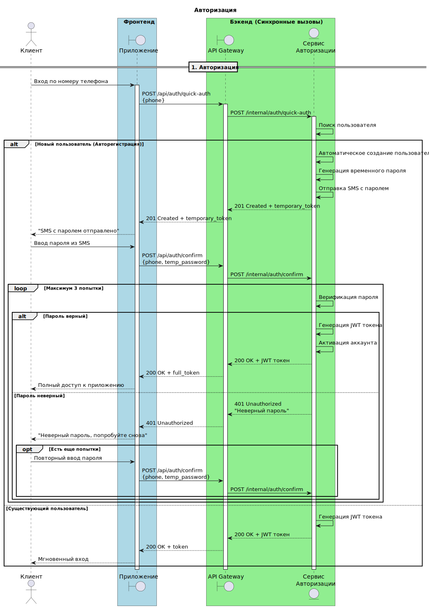

Модель интеграционного взаимодействия
Данный раздел описывает сценарии взаимодействия компонентов системы при выполнении ключевых бизнес-операций: авторизация пользователя и оформление заказа через клиентское табло. Диаграммы последовательности иллюстрируют потоки вызовов между фронтенд-приложениями, API Gateway, микросервисами и внешними системами. Описание каждого сценария включает логику синхронных и асинхронных вызовов, обработку ошибок и альтернативные ветви.
Авторизация пользователя
Цель сценария:
Обеспечить безопасный доступ пользователя (покупателя) к функционалу системы (оформление заказа, просмотр истории, использование бонусов). Реализована упрощённая регистрация/вход по номеру телефона с подтверждением через SMS.
Участники:
- Клиент (пользователь)
- Приложение (фронтенд: мобильное приложение или веб-интерфейс)
- API Gateway (единая точка входа)
- Сервис авторизации (микросервис, отвечающий за аутентификацию, генерацию JWT, управление пользователями)

Описание потоков:
| № | Наименование | Процесс |
|---|---|---|
| 1 | Запрос на вход | Пользователь вводит номер телефона в приложении. Приложение отправляет синхронный POST-запрос /api/auth/quick-auth с номером телефона на API Gateway. Gateway маршрутизирует запрос к сервису авторизации (/internal/auth/quick-auth). |
| 2 | Обработка в сервисе авторизации | Сервис авторизации выполняет поиск пользователя по номеру телефона в БД. Возможны два варианта: новый пользователь (авторегистрация) или существующий пользователь. |
| 2.1 | Авторегистрация (новый пользователь) | Система автоматически создаёт учётную запись, генерирует временный одноразовый пароль и инициирует отправку SMS с паролем (через сервис уведомлений, асинхронно). Сервис авторизации возвращает 201 Created и временный токен (temporary_token). Приложение уведомляет пользователя об отправке SMS. |
| 2.2 | Вход существующего пользователя | Сервис авторизации генерирует JWT-токен доступа и возвращает 200 OK с токеном. Пользователь получает полный доступ без дополнительных действий. |
| 3 | Подтверждение для нового пользователя | Пользователь вводит полученный по SMS пароль. Приложение отправляет запрос на подтверждение POST /api/auth/confirm с номером телефона и временным паролем. Gateway направляет запрос в сервис авторизации (/internal/auth/confirm). |
| 3.1 | Проверка пароля (цикл до 3 попыток) | Сервис авторизации проверяет временный пароль. При успешной проверке генерируется постоянный JWT-токен, аккаунт активируется, возвращается 200 OK с токеном. При неверном пароле возвращается 401 Unauthorized, приложение сообщает об ошибке. При исчерпании попыток процесс завершается ошибкой. |
| 4 | Результат | После успешной аутентификации клиент получает JWT-токен, который будет использоваться для авторизации всех последующих запросов. |
Обоснование синхронного взаимодействия:
Процесс входа является критическим для дальнейшей работы пользователя и требует немедленного подтверждения, поэтому все вызовы выполняются синхронно. Исключение составляет отправка SMS, которая может быть выполнена асинхронно, чтобы не блокировать ответ.
Заказ блюда
Цель сценария: Обеспечить полный цикл создания и оплаты заказа через клиентское табло (или мобильное приложение) с последующим уведомлением пользователя и запуском процессов приготовления и аналитики.
Участники:
- Клиент (покупатель)
- Табло / Приложение (фронтенд)
- API Gateway
- Сервис авторизации (проверка JWT)
- Сервис меню (управление каталогом и доступностью)
- Сервис заказов (оркестратор жизненного цикла заказа)
- Бонусная система (начисление/списание баллов)
- Сервис оплаты (интеграция с платёжным шлюзом и фискальным регистратором)
- Банковская система (внешний эквайринг)
- Фискальный терминал (АТОЛ/Штрих-М)
- Брокер сообщений (Kafka) для асинхронных уведомлений
- Сервис уведомлений (отправка push/SMS)
- Сервис статистики (сбор метрик)
- Роботизированный комплекс (управление приготовлением)

Описание потоков:
| № | Наименование | Процесс |
|---|---|---|
| 1 | Просмотр меню | Пользователь открывает приложение/табло. Фронтенд синхронно запрашивает актуальное меню через Gateway к сервису меню (GET /api/menu/categories). Сервис меню возвращает структурированный каталог блюд с ценами и признаками доступности. |
| 2 | Создание заказа | Пользователь добавляет товары в корзину и инициирует создание заказа. Фронтенд отправляет POST /api/orders/create с составом заказа. Gateway направляет запрос в сервис заказов. Сервис заказов синхронно проверяет доступность каждого товара через сервис меню (GET /internal/menu/availability). Если все товары доступны, сервис заказов создаёт запись в БД заказов со статусом "создан", рассчитывает предварительную сумму и возвращает фронтенду 201 Created с идентификатором заказа и суммой. |
| 3 | Процесс оплаты | Пользователь подтверждает оплату, возможно применяя бонусы. Фронтенд отправляет запрос на оплату POST /api/orders/{orderId}/payment с данными карты (токенизированными) и информацией о списании бонусов. Gateway маршрутизирует запрос в сервис оплаты. |
| 3.1 | Проверка авторизации | Перед выполнением платежа сервис оплаты проверяет валидность JWT-токена пользователя (через Gateway и сервис авторизации). |
| 3.2 | Резервирование ингредиентов | Сервис оплаты синхронно запрашивает у сервиса роботизированного комплекса доступность ингредиентов и резервирует их (POST /internal/robotics/ingredients). Это гарантирует возможность приготовления после оплаты. |
| 3.3 | Платёжная транзакция | Сервис оплаты отправляет запрос в банковскую систему (POST /transactions). В случае успеха получает подтверждение (transaction ID). При недоступности банка или отказе транзакции процесс прерывается с ошибкой. |
| 3.4 | Фискализация | После успешного списания средств сервис оплаты отправляет чек в фискальный терминал (POST /receipts). Фискальный регистратор возвращает номер фискального документа. |
| 3.5 | Обновление статуса заказа | Сервис оплаты уведомляет сервис заказов об успешной оплате (PUT /internal/orders/{orderId}/status). Сервис заказов меняет статус заказа на "оплачен". |
| 3.6 | Публикация события | Сервис заказов публикует в брокер сообщений событие OrderPaidEvent, содержащее детали заказа (ID, пользователь, сумма, использованные бонусы). |
| 3.7 | Ответ клиенту | Сервис оплаты возвращает фронтенду 200 OK с подтверждением оплаты. |
| 4 | Приготовление блюда и выдача заказа | Брокер сообщений доставляет событие OrderPaidEvent сервису роботизированного комплекса. Сервис роботов запускает процесс приготовления по технологической карте. |
| 4.1 | Установка SSE-соединения для табло | Табло клиентского зала устанавливает с сервисом заказов долгоживущее SSE-соединение через Gateway (GET /api/display/events). Сервис заказов подписывает соединение на обновления статуса заказа. |
| 4.2 | Обновление статуса на табло | При готовности заказа сервис роботов публикует событие OrderReadyEvent в брокер. Сервис заказов потребляет событие и через открытое SSE-соединение отправляет обновление на табло. |
| 5 | Уведомления пользователя | Брокер доставляет событие OrderPaidEvent сервису уведомлений. Сервис уведомлений отправляет push/SMS пользователю о принятии заказа. При дальнейших изменениях статуса сервис заказов публикует события, которые также обрабатываются сервисом уведомлений. |
| 6 | Сбор статистики | Все значимые события (заказ создан, оплачен, завершён) публикуются в брокер и потребляются сервисом статистики. Сервис статистики агрегирует данные в реальном времени (количество заказов, выручка, использование бонусов) и периодически выполняет фоновые расчёты для отчётов. |
Обоснование комбинированного взаимодействия:
-
Синхронные вызовы используются на этапах, где требуется немедленный ответ и согласованность данных: создание заказа, проверка доступности, проведение платежа, фискализация. Это обеспечивает целостность транзакции и исключает ситуации, когда заказ оплачен, но ингредиенты не зарезервированы.
-
Асинхронные события применяются для операций, не влияющих на основной поток: уведомления, обновление статистики, запуск приготовления. Это разгружает критические сервисы и повышает отказоустойчивость – даже при временной недоступности сервиса уведомлений или статистики заказ будет успешно оформлен.
-
SSE-соединение обеспечивает эффективную доставку обновлений статуса на табло без необходимости постоянных запросов со стороны клиента (long polling).